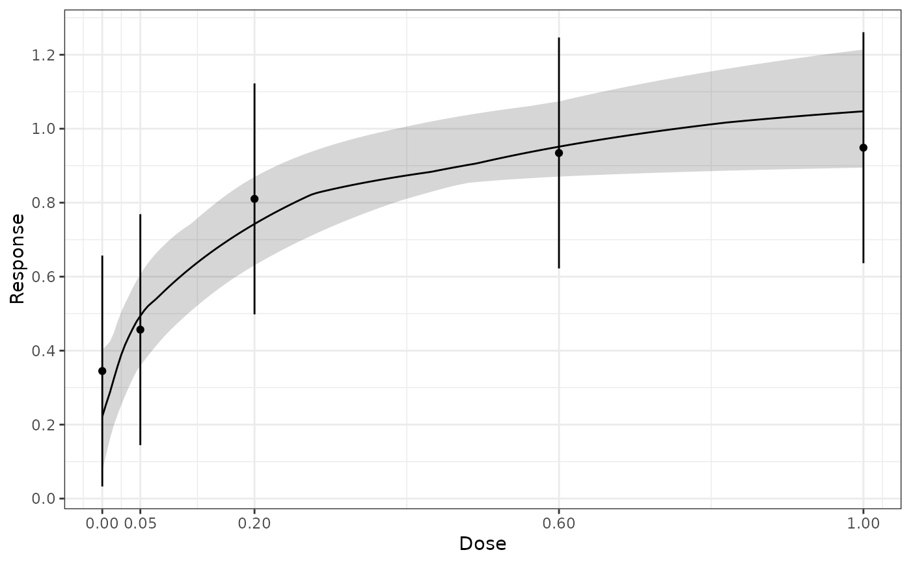

This function fits dose-response models in a bootstrap model averaging approach motivated by the bagging procedure (Breiman 1996) . Given summary estimates for the outcome at each dose, the function samples summary data from the multivariate normal distribution. For each sample dose-response models are fit to these summary estimates and the best model according to the gAIC is selected.
Usage
maFitMod(dose, resp, S, models, nSim = 1000, control, bnds, addArgs = NULL)
# S3 method for class 'maFit'
predict(
object,
summaryFct = function(x) quantile(x, probs = c(0.025, 0.25, 0.5, 0.75, 0.975)),
doseSeq = NULL,
...
)
# S3 method for class 'maFit'
plot(
x,
plotData = c("means", "meansCI", "none"),
xlab = "Dose",
ylab = "Response",
title = NULL,
level = 0.95,
trafo = function(x) x,
lenDose = 201,
...
)Arguments
- dose
Numeric specifying the dose variable.
- resp
Numeric specifying the response estimate corresponding to the doses in
dose- S
Covariance matrix associated with the dose-response estimate specified via
resp- models
dose-response models to fit
- nSim
Number of bootstrap simulations
- control
Same as the control argument in
fitMod().- bnds
Bounds for non-linear parameters. This needs to be a list with list entries corresponding to the selected bounds. The names of the list entries need to correspond to the model names. The
defBnds()function provides the default selection.- addArgs
List containing two entries named "scal" and "off" for the "betaMod" and "linlog" model. When addArgs is NULL the following defaults are used list(scal = 1.2*max(doses), off = 0.01*max(doses))
- object
Object of class maFit
- summaryFct
If equal to NULL predictions are calculated for each sampled parameter value. Otherwise a summary function is applied to the dose-response predictions for each parameter value. The default is to calculate 0.025, 0.25, 0.5, 0.75, 0.975 quantiles of the predictions for each dose.
- doseSeq
Where to calculate predictions.
- ...
Additional parametes (unused)
- x
object of class maFit
- plotData
Determines how the original data are plotted: Either as means or as means with CI or not at all. The level of the CI is determined by the argument level.
- xlab
x-axis label
- ylab
y-axis label
- title
plot title
- level
Level for CI, when plotData is equal to meansCI.
- trafo
Plot the fitted models on a transformed scale (e.g. probability scale if models have been fitted on log-odds scale). The default for trafo is the identity function.
- lenDose
Number of grid values to use for display.
Value
An object of class maFit, which contains the fitted dose-response models DRMod objects, information on which model was selected in each bootstrap and basic input parameters.
References
Breiman L (1996). “Baggin predictors.” Machine Learning, 24(2), 123-140. doi:10.1007/bf00058655 .
Examples
data(biom)
## produce first stage fit (using dose as factor)
anMod <- lm(resp~factor(dose)-1, data=biom)
drFit <- coef(anMod)
S <- vcov(anMod)
dose <- sort(unique(biom$dose))
## fit an emax and sigEmax model (increase nSim for real use)
mFit <- maFitMod(dose, drFit, S, model = c("emax", "sigEmax"), nSim = 10)
#> Message: Need bounds in "bnds" for nonlinear models, using default bounds from "defBnds".
mFit
#> Bootstrap model averaging fits
#>
#> Specified summary data:
#> doses: 0, 0.05, 0.2, 0.6, 1
#> mean: 0.345, 0.457, 0.81, 0.934, 0.949
#> Covariance Matrix:
#> 0 0.05 0.2 0.6 1
#> 0 0.025 0.000 0.000 0.000 0.000
#> 0.05 0.000 0.025 0.000 0.000 0.000
#> 0.2 0.000 0.000 0.025 0.000 0.000
#> 0.6 0.000 0.000 0.000 0.025 0.000
#> 1 0.000 0.000 0.000 0.000 0.025
#>
#> Models fitted: emax, sigEmax
#>
#> Models selected by gAIC on bootstrap samples (nSim = 10)
#> emax
#> 10
plot(mFit, plotData = "meansCI")

ED(mFit, direction = "increasing", p = 0.9)
#> [1] 0.638